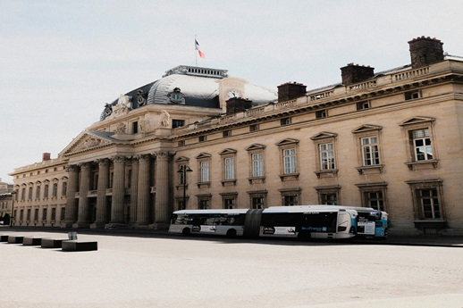
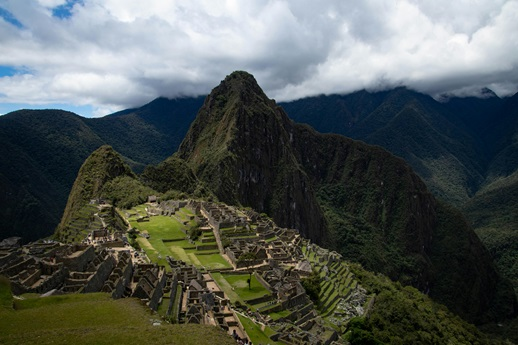
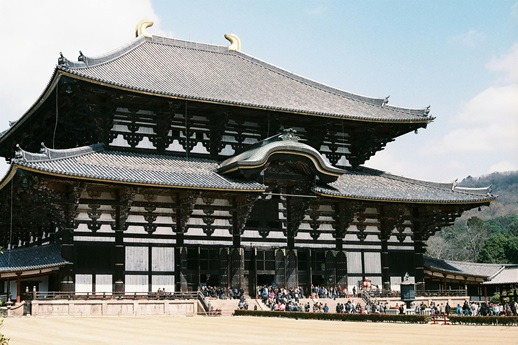

Roteiros Personalizados
Descubra roteiros prontos ou personalize o seu conforme suas preferências.

Roteiro por Paris, França
Explore a paisagem urbana do século XIX, por suas largas avenidas e pelo rio Sena.

Roteiro por Machu Picchu, Peru
Aventure-se no conjunto de ruínas históricas das habitações urbanas e estruturas rurais de uma civilização pré-colombiana.

Roteiro por Tóquio, Japão
Conheça e vislumbre uma das maiores metrópoles do planeta e também o centro político, econômico, educacional e cultural do Japão.